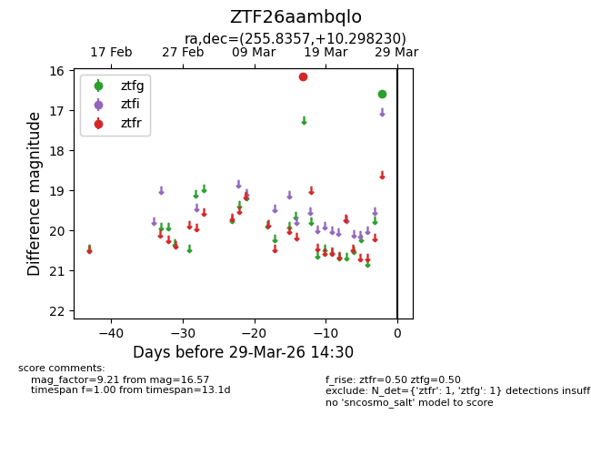
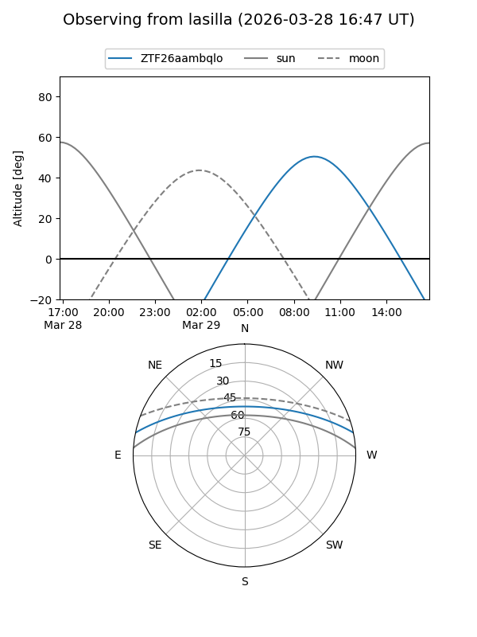
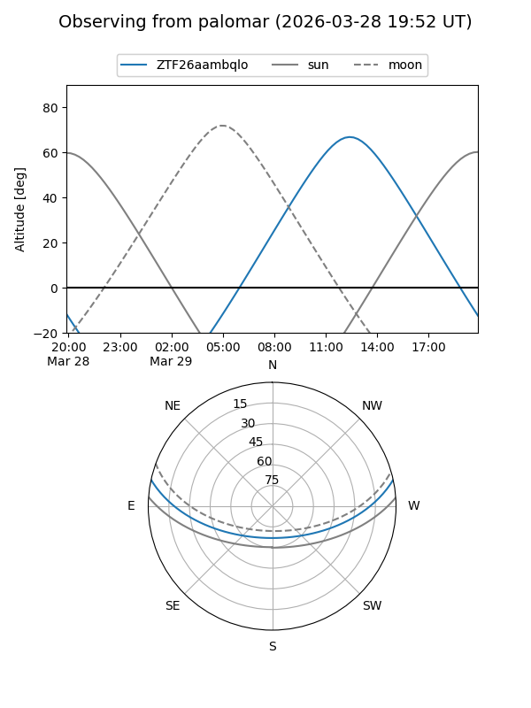

ZTF26aambqlo
Target ZTF26aambqlo at 2026-03-29 14:33
Aliases and brokers:
FINK: link
Lasair: link
ALeRCE: link
alt names
ZTF26aambqlo (ztf,fink_ztf)
Coordinates:
equatorial (ra, dec) = 255.8357,+10.29823
equatorial (HMS+DMS) = 17:03:20.56,+10:17:53.63
galactic (l, b) = (30.0098,+28.64483)
Flags:
Photometry:
last ztfg=16.57, ztfr=16.14
1 ztfg, 1 ztfr detections
Lightcurve

Visibility


Additional plots